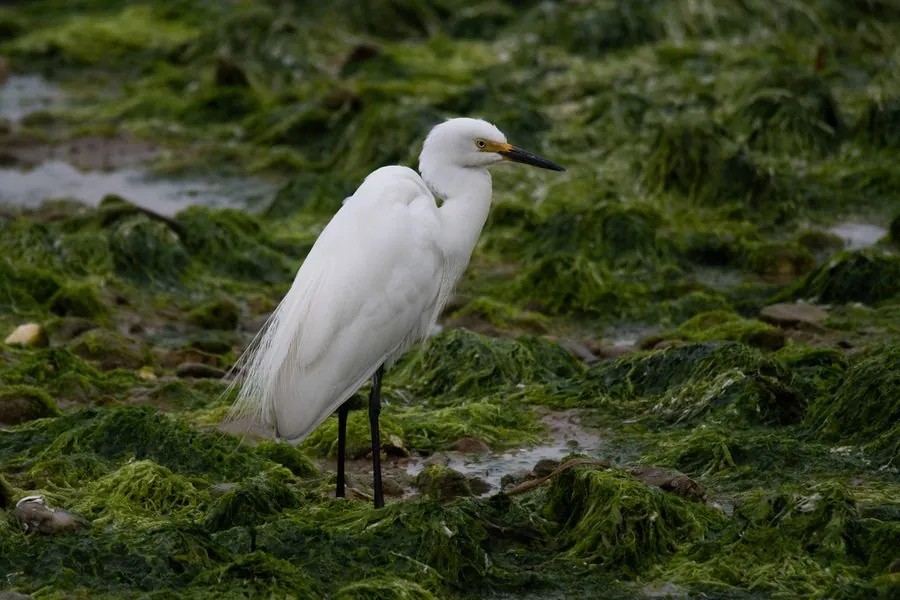

鸟类 · 动物界
中白鹭 Ardea intermedia

体型介于大白鹭和小白鹭之间的白色涉禽，喙呈黄色、腿黑色，常在稻田和浅水湿地中捕食鱼虾昆虫。
- 分类
- 门脊索动物门纲鸟纲目鹈形目科鹭科属鹭属
- 栖息环境
- 水田、湖泊、沼泽、河滩与沿海湿地等浅水区域
- 地理分布
- 南亚、东南亚、东亚和澳大利亚，中国南方有繁殖，北方多为旅鸟
- 保护级别
- IUCN 无危（LC）；中国“三有”保护动物
物种志
中白鹭体长 65–72 cm，体重 400–600 g。全身羽毛洁白，喙粗壮而呈黄色，腿和脚呈黑色，眼睛黄色，繁殖期头后会长出短饰羽。它的体形比小白鹭大、比大白鹭小，颈部细长，站立时姿态优雅。
中白鹭分布于南亚、东南亚、东亚和澳大利亚，中国南方、华东和西南地区有繁殖，北方多为旅鸟。它们栖息在水田、湖泊、沼泽、河滩和沿海湿地，常在浅水中缓慢行走，捕食鱼、虾、蛙类和昆虫。繁殖期与其它鹭类混群，在树上或竹林中营巢，每窝产卵 2–4 枚，孵化 24–26 天。中白鹭目前被列为无危物种，是湿地中常见的鹭类，中国将其列入“三有”保护名录。
形态与习性
- 食性鱼、虾、蛙类和昆虫
- 体长65–72 cm
- 体重400–600 g
- 繁殖每窝 2–4 枚卵，孵化 24–26 天
- 辨识体型介于大白鹭和小白鹭之间，喙黄腿黑
- 寿命野外约 10 年
趣味知识
- 中白鹭的体型正好介于大白鹭和小白鹭之间，因此得名。
- 它的喙呈黄色、腿黑色，是区分几种白色鹭类的重要特征。
- 中白鹭常与其它鹭类混群营巢，在树上形成大片鹭鸟林。